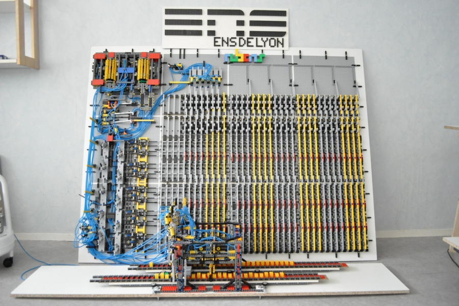

20 - Macchina di Turing
Modelli di calcolo¶
Con il termine modello di calcolo rappresentiamo tutte quelle macchine, astratte o reali, in grado di risolvere degli algoritmi.
E' quindi bene premettere che non esiste un modello di calcolo univoco: ogni modello adotta un esecutore con caratteristiche e capacità variabili, il che porta ad un approccio differente alla risoluzione di un problema. Dall'altro lato, basarsi su un modello di calcolo comune è necessario per confrontare l'efficienza di diversi algoritmi, ed è quindi un ottimo modo di integrare le nostre capacità di analisi computazionale a priori.
Nonostante esistano quindi diversi modelli, alcuni dei quali recenti o in fase di sviluppo, come ad esempio il quantum computing o il DNA computing, il modello di riferimento in informatica è sempre stato, e probabilmente rimarrà, la macchina di Turing.
Macchina di Turing¶
Ideata nel 1936 da uno dei "padri" dell'informatica, il famoso matematico inglese Alan Turing, la macchina di Turing è un modello di calcolo astratto composto essenzialmente da due componenti:
- in primis, un nastro infinito, che opera da dispositivo di memorizzazione (in pratica, tramite il nastro, la macchina può accedere alle informazioni);
- in secundis, una testina di lettura e scrittura che, scorrendo sul nastro, può leggerne e modificarne il contenuto.

Nota
La macchina di Turing è un modello astratto, ma non c'è alcun modello astratto che i Lego non possano rappresentare, come dimostra la seguente figura.

La macchina di Turing funziona modificando il suo stato sulla base del contenuto (o simbolo) presente sul nastro in corrispondenza della testina. Infatti, la macchina valuta il contenuto della posizione corrente del nastro ed il suo stato interno attuale; a partire da questi, è in grado di passare in un altro stato, eventualmente accedendo in scrittura al nastro, e scorrendo sullo stesso a destra o sinistra.
Questo ci permette di definire la macchina di Turing come un Automa a Stati Finiti Deterministico.
Automa a Stati Finiti Deterministico
La definizione formale di Automa a Stati Finiti Deterministico esula dagli obiettivi del corso. Tuttavia, possiamo darne una rapida definizione informale, come "macchina" che può avere un numero finito di possibili stati interni, ognuno dei quali è determinato a partire dallo stato precedente e dalla lettura del nastro in posizione attuale.
Nastro inifinto ed ASFD
Da notare che il fatto che il nastro abbia lunghezza infinita non modifica il fatto che gli stati raggiungibili siano in quantità finita.
Risoluzione di problemi mediante la macchina di Turing¶
La risoluzione di un problema (e, quindi, la definizione di un algoritmo atto a risolverlo) richiede la progettazione di un'adeguata macchina di Turing. In tal senso, è necessario definire almeno cinque parametri:
- un alfabeto \(\Sigma\) dei simboli che è possibile scrivere (leggere) sul (dal) nastro;
- un insieme di stati \(S\) in cui si può trovare la macchina;
- uno stato iniziale \(s_0\) nel quale la macchina si trova inizialmente, con \(s_o \in S\);
- un insieme di stati finali \(S_f\) nel quale la macchina si arresta, con \(S_f \in S\);
- una funzione di transizione \(\delta\) che determina il passaggio da uno stato ad un altro.
La funzione di transizione può essere definita come segue:
dove:
- \(\sigma_I\) è il simbolo letto dalla testina sul nastro;
- \(\s_I\) è lo stato della macchina di Turing antecedente la transizione;
- \(t\) è la transizione che verrà applicata al nastro (es. scorrimento verso destra o sinistra);
- \(\sigma_f\) è il simbolo scritto dalla testina sul nastro dopo la transizione;
- \(\s_F\) è lo stato della macchina di Turing successivo alla transizione.
Formalmente, è possibile definire una macchina di Turing \(T\) come:
Un esempio¶
Vediamo come è possibile risolvere un problema mediante una macchina di Turing. Per farlo, utilizzeremo un grafo degli stati per rappresentare l'automa.
Il nostro problema è quello di valutare se una stringa contiene il carattere \(a\).
Per questo, definiamo una macchina di Turing nel seguente modo:
- l'alfabeto \(\Sigma\) sarà dato da tutte le lettere dell'alfabeto inglese, più il simbolo #, che indica la fine della stringa;
- l'insieme degli stati \(S\) sarà dato da \({s_0, s_1, s_T, s_F}\);
- lo stato iniziale è \(s_0\) (stringa non contenente \(a\));
- gli stati finali sono \(s_T\) (vero) ed \(s_F\) (falso).
La strategia risolutiva ci permette di individuare la funzione \(\delta\). Infatti:
- partiamo dal primo carattere della stringa, e scorriamo il nastro verso destra;
- se incontriamo il carattere \(a\), la macchina entra nello stato \(s_1\), e ivi permane. Il nastro continua a scorrere verso destra fino a che non trova il carattere #, al quale si sposta in \(s_T\);
- se non incontriamo il carattere \(a\), scorriamo il nastro fino al carattere #, al quale si sposta in \(s_F\).
Ciò definisce la seguente funzione di transizione (in formato matriciale):
| \(s_0\) | \(s_1\) | \(s_T\) | \(s_F\) | |
|---|---|---|---|---|
| \(a\) | \(\langle D, s_1, - \rangle\) | $\(\langle D, s_1, - \rangle\) | / | / |
| \(b-z\) | \(\langle D, s_0, - \rangle\) | \(\langle D, s_1, - \rangle\) | / | / |
| # | \(\langle -, s_F, - \rangle\) | \(\langle -, s_T, - \rangle\) | / | / |
L'automa a stati finiti corrispondente sarà:

Tesi di Church-Turing¶
Abbiamo detto che la macchina di Turing è un modello di riferimento. Ciò significa che è possibile dimostrare che tutti i diversi tipi di modello sono equivaòenti, e quindi un problema risolvibile usando la macchina di Turing è risolvibile mediante qualsiasi modello di calcolo, astratto o reale.
La tesi di Church - Turing afferma che:
Tesi di Church - Turing
Se un problema è umanamente calcolabile, allora esisterà una macchina di Turing in grado di risolverlo (cioè di calcolarlo)
E' importante sottolineare come questa sia solo una tesi, e non un teorema.